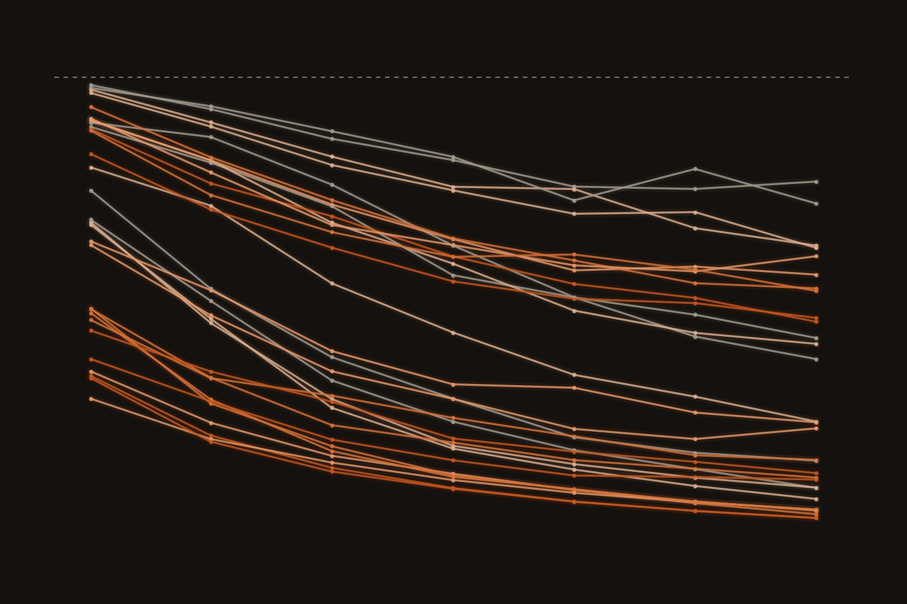
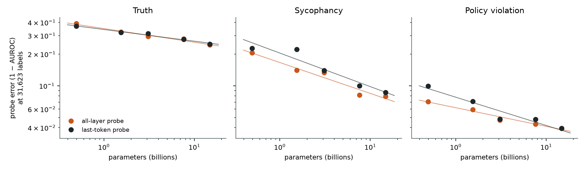
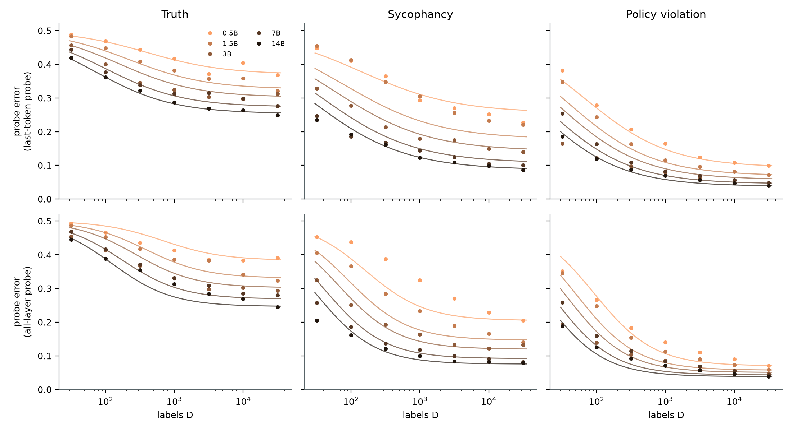
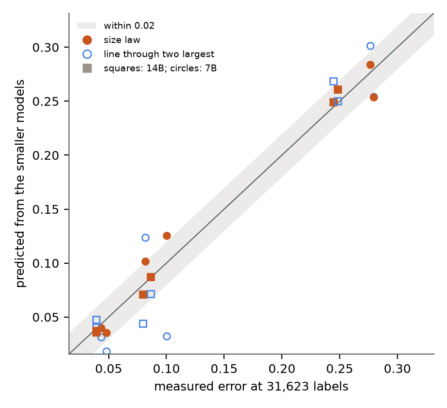
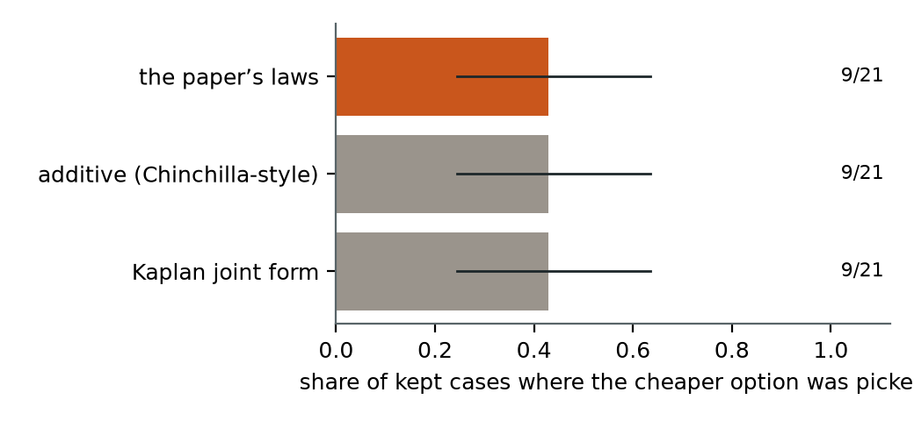

← Research·Experiments·
The scaling law for safety probes predicts a bigger model’s best probe, but not whether to buy labels or a bigger model
Can you predict how well a safety probe will work on a bigger model before you train it? A recent paper says yes, with two short formulas fitted on smaller models. We rebuilt its recipe on five Qwen2.5 sizes, three tasks and two probes. The first headline claim held: the size law put the next model’s best probe error within 0.02 in 9 of 12 predictions. The second did not: choosing between more labels and a bigger model, the laws were right in 9 of 21 cases, the same as always picking the bigger model.

Summary: the short answer and the key results
In short
Do the scaling laws for safety probes predict a bigger model’s probe from smaller ones?
Partly. On Qwen2.5 base models from 0.5B to 14B, a probe’s best error (1 − AUROC with 31,623 labels) fell as a power of model size on Truth, Sycophancy and Policy-violation tasks, as Wu and Wei found. Fitted on the three or four smaller models, that power law predicted the next model’s best error within 0.02 in 9 of 12 cases [0.47, 0.91], matching the paper’s 72% and beating a straight-line extrapolation (5 of 12). The paper’s second use, choosing whether more labels or a bigger model reaches a target error more cheaply, did not replicate: the laws were right in 9 of 21 cases [0.24, 0.63] against the paper’s 73%, because they always chose the bigger model, and so did the two standard scaling-law forms they were compared with.
Key results
| What we tested | Result (5 sizes, 3 tasks, 2 probes) | Paper |
|---|---|---|
| Predict the next size’s best probe error from the smaller models (size law) | Replicates: 9/12 within 0.02 [0.47, 0.91], 12/12 within 0.05; median miss 0.008 | 72% within 0.02, 97% within 0.05 (72 predictions) |
| Baselines on the same 12 predictions | Straight line through the two largest fit models 5/12; “same as the largest” 7/12 | 54% and 49% (25% relative error) |
| Choose between more labels and a bigger model | Does not replicate: 9/21 right [0.24, 0.63]; additive and Kaplan forms also 9/21; all three always chose the bigger model | Laws 73% (33/45); additive 38%, Kaplan 44% |
| The size law fits all five sizes | 5/6 settings (R² 0.92–0.98); Sycophancy, last-token probe misses one size by 0.043 | R² 0.94, no model more than 0.012 off |
| The label law fits every cell | 6/6 settings, RMS miss 0.013–0.035 | RMS miss 0.025–0.030 |
| Predict the next size’s whole label curve | 45/84 points within 0.02 [0.43, 0.64], 76/84 within 0.05 | 39% within 0.02 (32B and 72B) |
| Pick the better probe for the next size | 32/42 right or within 0.005 [0.61, 0.87], tied with the paper’s fixed rule | 82%; fixed rule 68% |
| Exploratory: five variants of the fit | None beats the paper’s protocol on the held-out 14B predictions (best: 6/6, tied) | Not tested in the paper |
01Introduction
A probe that reads Qwen2.5-0.5B’s activations and is given 31,623 labelled statements tells a true statement about a held-out fact from a false one with an error of 0.37 (AUROC 0.63). The same probe on the 3B model has an error of 0.31. Fit a power law through 0.5B, 1.5B and 3B and it says the 7B model’s probe will have an error of 0.28. Measured: 0.28. That is the promise of scaling laws for probes: you can price a monitor for a model you have not trained a probe on yet.
What is known. A probe is a small classifier that reads a model’s internal activations and flags, say, a false statement or a harmful request. Probes are cheap enough to run on every request, and this series has used them to watch for sandbagging and lies (episode 3). Wu and Wei (2026) trained probes on 20 models from five families with up to a million labels and found two regularities. First, with plenty of labels, a probe’s error falls as a power of model size. Second, the error moves from chance towards that floor in a predictable way as labels are added, and bigger models get there with fewer labels. Fitted on the smaller models, the two formulas predicted the next model’s best error within 0.02 in 72% of cases, and chose correctly between “add labels” and “use a bigger model” in 73%.
What is missing. The paper released no code or data, so the claims rest on one group’s pipeline. A replication at small scale tests whether the formulas are a property of probes or of that pipeline, and whether they still predict well when the grid is coarser and the labels fewer, which is the setting where a team would actually use them to plan.
Fitted on three or four smaller Qwen2.5 models, do the paper’s two laws predict the next model’s probe error within 0.02 as often as the paper reports, and do they pick the cheaper of “more labels” and “bigger model” better than the standard scaling-law forms?
What this note does. It rebuilds the paper’s Truth, Sycophancy and Policy-violation tasks from the same public sources, trains two probes on five Qwen2.5 sizes at seven label counts, fits the laws as the paper describes, and runs its extrapolation and cheaper-path tests, all written down before any probe was trained. It contributes:
- an independent replication of the size law’s one-size-up prediction: 9 of 12 within 0.02, in line with the paper’s 72%;
- a failed replication of the cheaper-path choice, with the reason: on a grid this small, the laws always say “bigger model”, and the measured curves often disagree;
- the rebuilt datasets and probe grid (every AUROC per seed), so the laws can be refitted by anyone;
- five pre-registered variants of the fit, none of which beat the paper’s protocol on held-out predictions.
What would count as success. Written down before any probe was trained (the pre-registration):
- The size law holds: on each task and probe, a power law in size fits the five sizes’ best errors with R² ≥ 0.8 and no model more than 0.03 off.
- The label law holds: it misses the measured errors by at most 0.045 RMS, and the number of labels a model needs to get halfway falls with size.
- One-size-up prediction replicates: the 95% interval of the share of predictions within 0.02 contains the paper’s 72%, and the law is within 0.02 at least as often as two simple baselines (a straight line through the two largest fit models; “same as the largest fit model”).
- The cheaper-path choice replicates: the laws are right in at least as many kept cases as the additive (Chinchilla-style) and Kaplan forms.
02Setup
Two terms recur. Probe error E is 1 − AUROC on a fixed test set: 0.5 is a coin flip, 0 is perfect. AUROC is the chance the probe scores a random positive example above a random negative one. The floor of a model is its probe error with the most labels we train on (31,623).
The two laws, with a worked example
The size law says the floor falls as a power of the parameter count N (in billions): E(N) = A · N−α. With A = 0.15 and α = 0.22, a 0.5B model’s floor is 0.15 × 0.5−0.22 = 0.175 and an 8B model’s is 0.095: each doubling multiplies the floor by 0.86. It is fitted by least squares on log E against log N.
The label law says that with D labels the error starts at 0.5 and moves towards the floor, with a fraction Bg / (Bg + (D√N)g) of the gap still left. The model is halfway when D = B/√N, so a model 4 times larger gets halfway with half the labels. The steepness g is 1 for the all-layer probe and fitted for the last-token probe, as in the paper; A and α are held from the size law and B (and g) fitted on every cell.
Tasks and probes
| Part | What it is |
|---|---|
| Truth | Statements built from Wikidata5M facts with one template per relation, true (“Queen Millennia was written by Leiji Matsumoto.”) against a false twin that swaps in another subject’s object (“… by John Maynard Keynes.”). 16,000 training pairs and 5,000 test pairs; the 9 test relations never appear in training |
| Sycophancy | The same facts stated by a user in one of 10 formats (“I’m certain that … — that’s just basic literature.”) and answered by a fixed agreeing reply; label 1 when the user’s claim is false. Facts are kept only if Qwen2.5-0.5B-Instruct judges both statements correctly, as in the paper: 17,411 of 87,958 facts. 16,002 training and 5,001 test pairs, relation-held-out |
| Policy violation | BeaverTails content shown with a policy clause it breaks against one it does not. 16,000 training pairs and 5,000 test pairs; the content never crosses the split |
| Last-token probe | Logistic regression on one layer’s residual stream at the last prompt token; the layer (at 40, 60, 70, 80 or 100% depth) and the penalty (8 values, 10−4 to 103) are chosen per seed by cross-validation grouped by pair, as in the paper |
| All-layer probe | Logistic regression on every layer at the last token (the end of the reply when there is one), each layer divided by its own RMS and concatenated: 21,504 weights at 0.5B, 245,760 at 14B. It has the paper’s CC++ probe’s weight count but reads one position, not every token |
| Grid | D = 32, 100, 316, 1,000, 3,162, 10,000 and 31,623 labels (half true, half false, drawn as pairs); 5 seeds up to 1,000 labels and 3 above; a cell’s error is 1 − the mean AUROC over its seeds. 5 sizes × 3 tasks × 2 probes × 7 label counts = 210 cells, 870 probes |
03How the study was run
- Read the paper and write the pre-registration (notes): grid, laws, tests, baselines and five exploratory variants, committed before any probe was trained.
- Build the data from Wikidata5M (87,958 fact pairs after the paper’s filters) and BeaverTails (42,000 rows); run the sycophancy judge on all 175,916 statements.
- Read activations and train probes, one GPU job per model and task: every row through the model once, then 29 probes for each probe type (5 seeds at the four smaller label counts, 3 at the three larger); 870 probes in all.
- Fit the laws on all five sizes (tests 1 and 2), then on the 3 and 4 smallest to predict 7B and 14B (test 3): 12 floor predictions and 84 curve points.
- Run the cheaper-path test (test 4) and the probe-choice test with the same fits.
- Exploratory: five variants of the fit, one chosen on the 7B predictions and scored on 14B.
| Fixed before any probe was trained | Changed after reading results |
|---|---|
| Models, tasks, label grid, seeds, both probes and their selection rule, the laws and how they are fitted, the tests and their bars, the baselines, the five variants and the rule for choosing one | Nothing in the analysis. Two engineering fixes before any result was read: the extraction job ran out of GPU memory at 7B (a sanity check copied the whole feature matrix), and the judge’s first run computed logits at every position; both were fixed and rerun. 32B, planned only as a confirmation set, was not run |
Conditions: Modal GPUs (L4 for 0.5B–3B, L40S for 7B, A100 80 GB for 14B), bfloat16 forward passes, probes fitted in float32 on the GPU by L-BFGS; 14B took 3.5 minutes to read 42,000 rows and 18 minutes to train both probes on one task. Law fits run on a laptop CPU in seconds. Spend: $20.78 of Modal, no API calls.
04Results
4.1 The best probe error falls as a power of model size on all three tasks
On every task and probe, the error at 31,623 labels falls with size, and a power law fits the five sizes with R² between 0.92 and 0.98. Five of six settings pass the pre-registered bar; on Sycophancy with the last-token probe, 1.5B sits 0.043 above the line.

| Task, probe | Error at 0.5B / 1.5B / 3B / 7B / 14B | α | Per doubling | R² |
|---|---|---|---|---|
| Truth, last-token | 0.368 / 0.322 / 0.313 / 0.277 / 0.248 | 0.11 | ×0.93 | 0.98 |
| Truth, all-layer | 0.391 / 0.324 / 0.294 / 0.279 / 0.244 | 0.13 | ×0.91 | 0.97 |
| Sycophancy, last-token | 0.227 / 0.221 / 0.139 / 0.100 / 0.086 | 0.32 | ×0.80 | 0.92 |
| Sycophancy, all-layer | 0.205 / 0.140 / 0.133 / 0.082 / 0.079 | 0.29 | ×0.82 | 0.95 |
| Policy, last-token | 0.099 / 0.071 / 0.048 / 0.048 / 0.039 | 0.27 | ×0.83 | 0.93 |
| Policy, all-layer | 0.071 / 0.059 / 0.047 / 0.043 / 0.039 | 0.18 | ×0.88 | 0.97 |
The exponents, 0.11 to 0.32, sit inside the paper’s range across tasks (0.16 to 0.41) at the low end on Truth. Our Truth task is much harder than the paper’s: an error of 0.25 at 14B against about 0.1 in the paper. The test relations are held out, so the probe must find a direction for “false” that transfers to relations it has never seen; with at most 31,623 labels, part of that gap may be labels we did not have.
4.2 The label law fits every curve, and bigger models need fewer labels
The label law misses the measured errors by 0.013 to 0.035 RMS across the six settings, inside the pre-registered 0.045. The labels a model needs to get halfway fall with size in all six (slope of log D0 on log N from −0.12 to −1.07; paper −0.51).

The fit is loosest on Sycophancy (0.035), where 0.5B and 1.5B have nearly the same curve: the smallest two models know about equally few of these facts. Truth with the all-layer probe is the one setting where the halfway point barely moves with size (slope −0.12 ± 0.17), against the paper’s −0.51.
4.3 Fitted on smaller models, the size law predicts the next size within 0.02 in 9 of 12 cases
Fitted on 0.5B–3B to predict 7B and on 0.5B–7B to predict 14B, the size law’s floor prediction is within 0.02 of the measured error in 9 of 12 cases [0.47, 0.91] and within 0.05 in 12 of 12, with a median miss of 0.008. The interval contains the paper’s 72%, and the law beats both baselines: 5 of 12 for a straight line through the two largest fit models, 7 of 12 for “same as the largest”. Test 3 passes.

All three misses are predictions of 7B from three models: Sycophancy (both probes predicted 0.102 and 0.125, measured 0.082 and 0.100) and Truth with the all-layer probe (0.254 against 0.279). With four models in the fit, all six 14B predictions land within 0.02, matching the paper’s observation that more sizes help. Predicting two sizes up (14B from 0.5B–3B) lands 5 of 6 within 0.02.
Whole curves are harder. Predicting the next model’s error at every label count with the label law, 45 of 84 points are within 0.02 [0.43, 0.64] and 76 within 0.05; the paper reports 39% within 0.02 for its 32B and 72B curves. Using the steepness term for both probes changes the curve share to 49 of 84 and leaves the floors at 9 of 12.
4.4 Choosing between more labels and a bigger model: the laws always say “bigger”, and are right 9 times in 21
Of the 21 cases kept by the paper’s rules, the laws chose the cheaper option in 9 [0.24, 0.63], against the paper’s 73%. The additive (Chinchilla-style) and Kaplan forms were also right in 9: all three chose the bigger model in every case, and the bigger model was the cheaper one in 9. By the pre-registered rule (at least as many as each baseline) test 4 passes as a tie; it does not replicate the paper’s 73%, and the comparison carries no information.

Two things make the test fail here. First, the laws think the current model cannot reach the target: in 18 of 21 cases its predicted floor is above the target, so “add labels” is rarely on the table, and where it is, the bigger model still looks cheaper. The size law is fitted on errors at 31,623 labels, and the label law adds the gap still left on top, so the law’s own prediction of the current model at 31,623 labels sits above what was measured. Second, the measured answer is often “more labels” for a reason no monotone law can see: in 12 of the 21 cases the next model needed about as many labels as the current one, or more (Truth, all-layer probe, target 0.30: 3B needed 2,949 labels and 7B 4,765). The cases are also far from independent: 21 rows come from 9 distinct (task, probe, model, target) combinations, repeated across the labels-at-hand grid.
Read literally (the size law fitted at the labels in hand, not jointly), the laws again pick the bigger model every time: 9 of 21.
4.5 The laws pick the better probe as often as a fixed rule
Predicting both probes’ curves for 7B and 14B and picking the lower at each label count, the laws were right or within 0.005 of the better probe in 32 of 42 cases [0.61, 0.87], tied with the paper’s fixed rule (last-token below 10,000 labels, all-layer above); paper 82% against 68%. When the laws picked the worse probe, it cost 0.011 in error on average (paper 0.006). Always using the all-layer probe scored 29 of 42 and always the last-token probe 28.
4.6 Exploratory: no variant of the fit beats the paper’s protocol on held-out predictions
Of five pre-registered variants, the one chosen on the 7B predictions, a joint fit of all four constants on every cell (5 of 6 within 0.02 against the paper’s 3 of 6), scored 5 of 6 on the held-out 14B predictions against the paper protocol’s 6 of 6 (paired: 0 wins, 1 loss, 5 ties). None of the five beat the paper’s protocol on 14B.
| Variant | 7B (selection), within 0.02 | 14B (held out), within 0.02 | 14B median miss | Paired with the paper on 14B |
|---|---|---|---|---|
| The paper’s protocol (size law at 31,623 labels) | 3/6 | 6/6 | 0.004 | — |
| V1 joint fit of A, α, B, g on every cell (chosen) | 5/6 | 5/6 | 0.014 | 0 wins, 1 loss, 5 ties |
| V2 size law on the logit of the error | 4/6 | 6/6 | 0.003 | 0, 0, 6 |
| V3 one α and g per probe, shared by the three tasks | 2/6 | 2/6 | 0.025 | 0, 4, 2 |
| V4 an irreducible floor E0 + A N−α | 5/6 | 4/6 | 0.015 | 0, 2, 4 |
| V5 one cheap measurement on the target model (1,000 labels) | 3/6 | 4/6 | 0.013 | 0, 2, 4 |
The logit variant has the smallest held-out miss (0.003 against 0.004) but the same count, so by the pre-registered rule it does not beat the paper. Six held-out predictions cannot separate methods that all land within 0.02 most of the time.
4.7 Against the paper
| Claim | Wu and Wei | This note | Replicates |
|---|---|---|---|
| Best error is a power law in size | R² 0.94 (Qwen2.5 Truth); α 0.16–0.41 by task | R² 0.92–0.98; α 0.11–0.32 | ✓ (5 of 6 within 0.03) |
| Label law with a √N halfway point | RMS 0.025–0.030; slope −0.51 | RMS 0.013–0.035; slopes −0.12 to −1.07 | ✓ |
| One size up within 0.02 | 72% of 72 | 9/12 [0.47, 0.91] | ✓ |
| Beats a straight-line extrapolation | 72% vs 54% | 9/12 vs 5/12 | ✓ |
| Cheaper path: labels or bigger model | 73% of 45; additive 38%, Kaplan 44% | 9/21 [0.24, 0.63]; all three methods tied | ✗ |
| Picks the better probe | 82% vs fixed rule 68% | 32/42 vs 32/42 | ✗ (no better than the rule) |
05Implications for AI safety
A team deciding which model to put a monitor on can use the size law to forecast the next model’s best probe from three or four smaller ones, on tasks it has never probed at that size: here the forecast was within 0.02 three times in four, at a cost of a few GPU-hours for the small models. That is useful for planning: whether a truth probe will be good enough on the next model is mostly decided by the small models’ trend.
The budgeting use is not ready at this scale. Deciding between labelling more data and moving to a bigger model needs the label law to say where the current model can still go, and fitted on a short grid it believes the current model is nearly at its floor, so it always recommends the bigger model. The measured curves were noisy enough that a bigger model sometimes needed more labels, not fewer.
Recommendation: use the size law to forecast a probe’s best error one model size up, but measure the label curve on the model you will deploy before deciding whether to buy labels or a bigger model.
06What this does not show
- A smaller grid. Five sizes up to 14B and at most 31,623 labels, against the paper’s seven sizes up to 72B and a million labels. Our floor is the error at 31,623 labels, which for small models may still sit above the true floor; that alone could explain the cheaper-path failure.
- Few predictions. 12 floor predictions and 21 cheaper-path cases from 9 distinct combinations; the intervals are wide (9/12 is consistent with anything from 47% to 91%).
- One family. Qwen2.5 base models only; the paper found the size exponent varies from 0.10 to 0.41 across families.
- A stand-in for CC++. The all-layer probe reads one token, not every token with smoothing and max-pooling, so the CC++ results are not replicated directly.
- Three of six tasks. General harm, jailbreak and prompt injection need model-written harmless twins; we did not build them. Our Truth task is much harder than the paper’s (error about 0.25 at 14B against about 0.1), likely because of the held-out relations and our templates.
07Reproduce it
Refit the laws and print every number in this note from results/, then redraw the figures, on a laptop, in seconds:
cd experiments/probe-scaling-laws
python fit_laws.py # writes results/laws.json, prints every test
python make_figures.py # prints every plotted numberRebuild the data and rerun the probe grid (downloads Wikidata5M, Wikidata labels and BeaverTails; Modal GPUs, about 11 GPU-hours of probing and reading plus model loading, $21):
experiments/probe-scaling-laws/reproduce.sh --dry-run # every command
experiments/probe-scaling-laws/reproduce.sh08What’s next
- The cheaper-path test with a longer label axis (to 105 or more) on the same five sizes, to see whether the failure is the short grid or the law.
- 32B as an untouched confirmation set for the size law, with the predictions committed before the run.
- A second family (Qwen3 or Gemma) to test whether the exponents transfer.
- The paper’s per-token CC++ probe, which overtakes the last-token probe only with many labels.
09Questions and answers
What are scaling laws for safety probes?
Two formulas from Wu and Wei (2026): a probe’s best error falls as a power of model size, and with D labels the error moves from chance towards that floor, faster on bigger models. Fitted on small models, they predict a bigger model’s probe before it is trained.
Do they replicate on a small grid?
The size law does. On Qwen2.5 0.5B–14B, it predicted the next size’s best probe error within 0.02 in 9 of 12 cases, matching the paper’s 72%. The choice between more labels and a bigger model did not replicate: 9 of 21 right against the paper’s 73%.
Should I add labels or use a bigger model for a better probe?
On this evidence, measure rather than predict. The laws fitted on a short grid always recommended the bigger model and were right in fewer than half the cases; in more than half, adding labels to the current model was cheaper.
AAppendix: data
Every file in results/ and data/; no activations (rebuilt by modal_extract.py).
results/<model>/<task>_<probe>.json: model metadata (n_params_b, layers, width, the layers read), timings, andcells, one row per (D, seed):aurocon the test set,val_auroc, the chosendepth_indexandC, andn_labels.results/laws.json: every fit and test:P1_P2(size and label law per setting),P3(each prediction with the baselines and the predicted curve),P3_eq3_both,P3_two_up,P4(each kept case with the measured and predicted labels and each method’s pick),P4_literal,P5,variants.results/fit_laws_output.txtis the printed run.data/judge.jsonl: the sycophancy judge’s P(yes) for the true and the false statement of each fact;data/split.json: the train and test relations. The task files are rebuilt bybuild_pool.py,judge_filter.py,build_tasks.pyandbuild_policy.py.
How to cite
@misc{lie2026probescaling,
author = {Albert Lie},
title = {The scaling law for safety probes predicts a bigger model’s best probe, but not whether to buy labels or a bigger model},
year = {2026},
month = nov,
note = {steerlab research note},
url = {https://albertlieyingadrian.github.io/steerlab/experiments/probe-scaling-laws/report/}
}